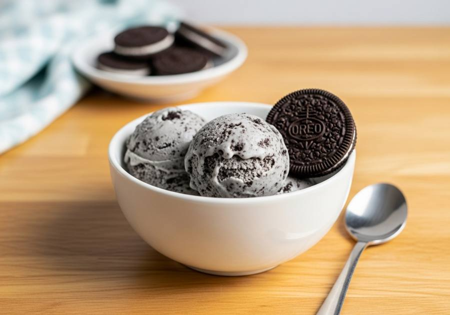

← Alle recepten

🍽 1 pint (4 porties)
⏱ Voorbereiding: 15 min
🔥 Bereiding: 24 uur
Σ Totaal: 24 uur 15 min
Ingrediënten
- 1 el roomkaas, op kamertemperatuur
- 65 g kristalsuiker
- 1 tl vanille-extract
- 180 ml slagroom
- 240 ml volle melk
- 4 Oreo's, grof verkruimeld
Bereiding
- Verwarm de roomkaas 10 seconden in de magnetron en roer met de suiker en vanille tot een gladde 'frosting'.
- Meng er beetje bij beetje de slagroom en melk door tot de suiker is opgelost.
- Giet in de Creami-pint en vries minimaal 24 uur plat in.
- Draai op de stand Ice Cream. Maak met een lepel een gat tot de bodem, voeg de Oreo-kruimels toe en draai op Mix-in.
Bron: Ninja Test Kitchen